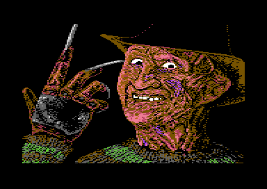
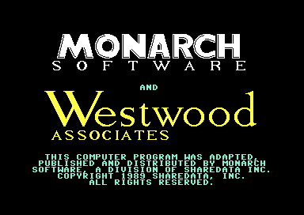

<meta charset="utf-8">
<meta name="viewport" content="width=device-width, initial-scale=1">
<title>A Nightmare on Elm Street</title>
<link rel="preconnect" href="https://fonts.googleapis.com">
<link rel="stylesheet" href="https://fonts.googleapis.com/css2?family=Lato:wght@400;700;900&family=IBM+Plex+Mono:wght@400;500&display=swap">
<style>
:root{
  --bg:#23262d; --paper:#e9e7e1; --surface:#ffffff; --surface-2:#f1efea; --line:#d5d3cc; --line-soft:#e0ded8;
  --ink:#2f3136; --ink-soft:#55585f; --ink-mute:#80838a;
  --link:#1f5fa8; --link-hover:#154480; --accent:#1f5fa8;
  --amber:#c25a00; --cyan:#1f5fa8; --coral:#d04a3a; --green:#2a8a4a; --violet:#4a5bd6; --hl:#fff0c2;
  --chip:#2f3136; --chip-ink:#ffffff;
  --c64blue:#40318d; --c64grey:#686868;
  --fd:'Lato',system-ui,sans-serif; --fb:'Lato',system-ui,sans-serif; --fm:'IBM Plex Mono',ui-monospace,Menlo,monospace;
  --col:1080px; --gx:68px; --fs:17px; --lh:1.6; --hw:900; --h1:46px; --h2:26px; --sy:48px; --pp:26px; --r:10px;
  --plate-shadow:0 1px 2px rgba(0,0,0,.05),0 4px 14px rgba(0,0,0,.05);
}
*{box-sizing:border-box}
html{background:var(--bg);min-height:100%}
body{background:var(--paper);color:var(--ink);font-family:var(--fb);font-size:var(--fs);line-height:var(--lh);max-width:var(--col);margin:0 auto;min-height:100vh;padding:0 0 4rem}
h1,h2,h3{font-weight:var(--hw);letter-spacing:-.01em;text-wrap:balance;color:var(--ink);margin:0}
.wrap{padding:0 var(--gx)}
.hero{padding:48px var(--gx) 8px;text-align:left}
.eyebrow{font-family:var(--fm);font-size:12px;letter-spacing:.08em;text-transform:uppercase;color:var(--ink-mute);margin:0 0 10px}
.hero h1{font-size:var(--h1);line-height:1.15;letter-spacing:-.02em;margin:0 0 14px}
.hero .sub{margin:0 0 .6em;color:var(--ink-soft)}
section{padding:var(--sy) 0 24px}
section:last-of-type{border-bottom:none}
.fig{font-family:var(--fm);font-size:12px;letter-spacing:.08em;text-transform:uppercase;color:var(--ink-mute);margin:0 0 10px}
h2.t{font-size:var(--h2);margin-bottom:12px}
.lede{color:var(--ink-soft);margin:0 0 30px}
.plate{background:var(--surface);border:1px solid var(--line);border-radius:var(--r);padding:var(--pp);box-shadow:var(--plate-shadow)}
.cap{font-size:14px;color:var(--ink-mute);margin-top:14px;line-height:1.55}
.cap b{color:var(--ink);font-weight:700}
code{font-family:var(--fm);font-size:.82em;background:var(--chip);color:var(--chip-ink);border-radius:4px;padding:2px 6px;overflow-wrap:break-word;-webkit-box-decoration-break:clone;box-decoration-break:clone}
.plate{margin:0 0 22px}
.ft-table{border-collapse:collapse;font-size:14px;width:100%}
.ft-table td,.ft-table th{border-bottom:1px solid var(--line-soft);padding:5px 8px;text-align:left;vertical-align:top}
.ft-two{display:grid;grid-template-columns:1fr 1fr;gap:16px;align-items:start}
.ft-two .plate{margin:0;padding:12px}
.ft-px{width:100%;height:auto;image-rendering:pixelated;display:block}
.ft-tabs{display:flex;flex-wrap:wrap;gap:6px;margin:0 0 12px}
.ft-scroll{overflow:auto;max-height:80vh;border-radius:6px;background:#222}
.ft-scroll canvas{image-rendering:pixelated;display:block}
.ft-key{display:flex;flex-wrap:wrap;gap:6px 16px;font-size:14px;margin:10px 0 0;color:var(--ink-soft)}
.ft-key span{display:inline-flex;align-items:center;gap:6px}
.ft-key b{display:inline-block;min-width:22px;text-align:center;font:700 12px/18px var(--fm);border-radius:4px;color:#fff;padding:0 4px}
sup.fn{font-size:.7em;line-height:0}
sup.fn a{text-decoration:none}
sup.fn + sup.fn::before{content:","}
.overview-shot{margin:22px 0}
.overview-shot img{width:100%;max-width:768px;height:auto;aspect-ratio:384/272;image-rendering:pixelated;display:block}
.overview-shot figcaption{font-size:14px;color:var(--ink-mute);margin-top:8px;max-width:768px}
@media (max-width:760px){:root{--gx:16px;--h1:36px;--pp:14px}.ft-two{grid-template-columns:1fr}}
kbd{font:500 12px/1 var(--fm);border:1px solid var(--line);border-bottom-width:2px;border-radius:4px;padding:2px 5px;background:var(--surface-2);color:var(--ink);white-space:nowrap}
.nm-compass{max-width:520px;table-layout:fixed}
.nm-compass td{text-align:center;padding:10px 6px;border:1px solid var(--line-soft)}
</style>
<!-- tabs -->
<header class="hero">
  <p class="eyebrow">Commodore 64 · 1989 · Monarch Software</p>
  <h1>A Nightmare on Elm Street</h1>
  <p class="sub">Five Dream Warriors, one giant Freddy in the streets of Springwood, and ten levels of his dream below his house, where a clock runs down to midnight.</p>
</header>
<main class="wrap" data-part="">

<section id="story">
  <p class="fig">01 · The game</p>
  <h2 class="t">Find the house, find your friends, then face Freddy</h2>
  <figure class="overview-shot"><figcaption>Freddy's picture, the last of the three the title sequence shows while the title tune plays.</figcaption></figure>
  <p class="lede">You are one of the Dream Warriors, and Freddy Krueger has your friends. You choose who to play, then walk the streets of Springwood looking for Freddy's house while a giant Freddy walks after you.</p>
  <p>The choice is one of five: Kincaid, Kristen, Will, Nancy, or Taryn, each with a <a href="gameplay.html#powers">special power</a>. Joey's portrait is there too, but he cannot be chosen.<sup class="fn"><a href="about.html#src-1">1</a></sup> In <a href="gameplay.html#street">Springwood</a> the house is at one of nine places, a different one each game, and you cannot fight him there, so the only answer is to keep moving. The instruction guide puts it plainly: "Freddy is out there and you are powerless until you find and enter the house."<sup class="fn"><a href="about.html#src-6">6</a></sup></p>
  <p>At the house a voice tells you what comes next: "YOU MUST SEEK OUT YOUR FRIENDS, FOR ONLY WITH THEIR HELP DO YOU STAND A CHANCE AGAINST FREDDY." The other four Dream Warriors are <a href="gameplay.html#friends">hidden on the levels below</a>, and while you search, Freddy visits them one at a time and drains their souls. <a href="gameplay.html#house">Ladders</a> lead down through ten levels of mazes, monsters, traps, and puzzles, each level with its own script of riddles and hints. Amanda Krueger, Freddy's mother, speaks to you on the way.</p>
  <p>The last level is a <a href="discoveries.html#clock">clock face</a>, and a clock runs there. A voice tells you to be rid of Freddy's hat, his glove, and the crucifix before it strikes twelve. Then comes <a href="gameplay.html#final">the fight with Freddy</a>, and the friends you saved fight beside you.</p>
  <figure class="overview-shot"><figcaption>Level 2. The panel holds your own meters and the four friends' boxes, each with the level the friend is held on and their soul.</figcaption></figure>
</section>

<section id="makers">
  <p class="fig">02 · Who made it</p>
  <h2 class="t">The people behind the game</h2>
  <figure class="overview-shot"><figcaption>The first picture of the title sequence.</figcaption></figure>
  <p>The credits picture names two companies: "MONARCH SOFTWARE AND Westwood ASSOCIATES". Below them, the small print says the program "WAS ADAPTED, PUBLISHED AND DISTRIBUTED BY MONARCH SOFTWARE, A DIVISION OF SHAREDATA INC.", copyright 1989 Sharedata, Inc. The same game came out for the IBM PC.<sup class="fn"><a href="about.html#src-1">1</a></sup><sup class="fn"><a href="about.html#src-2">2</a></sup></p>
  <p>No person is named anywhere on the disk. The instruction guide names them: Phil Gorrow and Shawn Smith programmed the game, Maurine Starkey and Joseph Hewitt drew it, Paul Mudra made the sounds and music, and Brett W. Sperry produced and directed it. The guide is one booklet for both machines, so it does not say which of them worked on the Commodore 64 version.<sup class="fn"><a href="about.html#src-6">6</a></sup> The fast loader on the disk is called <code>WWDOS.O</code>, Westwood's DOS, which <a href="source-resident.html#7BA8">sends its own code into the disk drive</a> and receives each file two bits at a time.</p>
  <p>It is a different game from the better-known <i>A Nightmare on Elm Street</i> that Rare made for LJN on the NES in 1990.<sup class="fn"><a href="about.html#src-3">3</a></sup> The characters come from the third film, <i>Dream Warriors</i>, and MobyGames lists the game under that name too.<sup class="fn"><a href="about.html#src-1">1</a></sup></p>
</section>

<section id="reception">
  <p class="fig">03 · Reception</p>
  <h2 class="t">No review at the time, kind words later</h2>
  <p>No review of the Commodore 64 version from 1989 was found. <i>ZZAP!64</i> issue 55, of November 1989, has none,<sup class="fn"><a href="about.html#src-4">4</a></sup> and the other magazine pages tried could not be read. MobyGames says the game is very hard to find, because it was not widely distributed.<sup class="fn"><a href="about.html#src-1">1</a></sup></p>
  <p>Looking back in 2024, Steve Perrin of Little Bits of Gaming called the Commodore 64 game "a pretty good game", "an action-adventure that involved a lot of exploration and item management", and "an early example of a survival horror title". He found it "very much ahead of its time when most movie-based games were lazy platformers", and wrote that it reached the shops a couple of months before the NES game. Of the PC version he said only that it "had better graphics, but worse sound".<sup class="fn"><a href="about.html#src-7">7</a></sup></p>
</section>

<section id="hidden">
  <p class="fig">04 · What's hidden</p>
  <h2 class="t">What a player would not see</h2>
  <p>Level 4's map spells <a href="discoveries.html#help">HELP ME</a> in a corner no corridor reaches. The street knows a key, <a href="discoveries.html#f3">F3</a>, that fills your health, and nothing tells you about it. The vending machine has texts for <a href="discoveries.html#vending">stealing your money</a> that it never prints, and the MAGIC SHIELD <a href="discoveries.html#shield">does nothing at all</a>. A second wrong answer to the <a href="discoveries.html#question">manual question</a> stops the game for good. These and more are on the <a href="discoveries.html">Discoveries</a> tab.</p>
</section>
</main>
<footer style="margin:16px 0 0;padding:22px var(--gx) 0;border-top:1px solid #e0ded8;font-family:'IBM Plex Mono',ui-monospace,Menlo,monospace;font-size:12px;color:#80838a"><a href="https://github.com/gamesexplained/gamesexplained" style="color:#1f5fa8;text-decoration:none">GitHub</a> · <a href="https://discord.gg/3V9GWyRDWV" style="color:#1f5fa8;text-decoration:none">Discord</a><br>© Games Explained contributors. Write-ups, facts and symbol maps are available under <a href="https://creativecommons.org/licenses/by-sa/4.0/" style="color:#1f5fa8;text-decoration:none">CC BY-SA 4.0</a>; code under <a href="https://opensource.org/licenses/MIT" style="color:#1f5fa8;text-decoration:none">MIT</a></footer>
